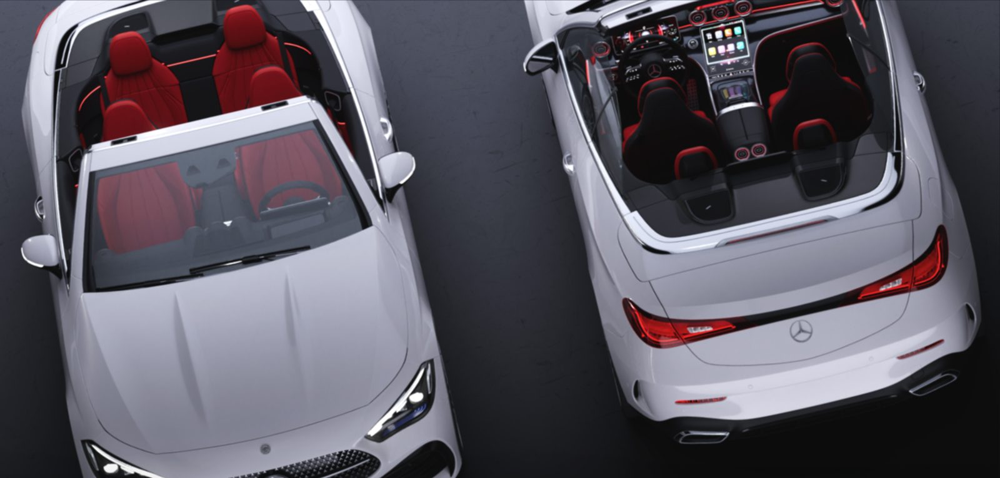
Representing the pinnacle of emotional design, the CLE Cabriolet demands a precise balance of form and atmosphere for premium users.
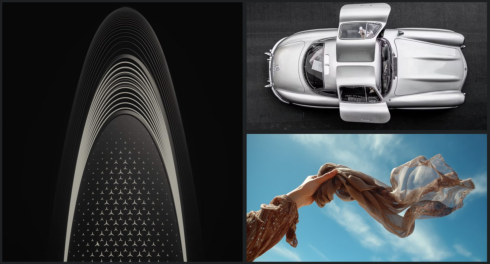
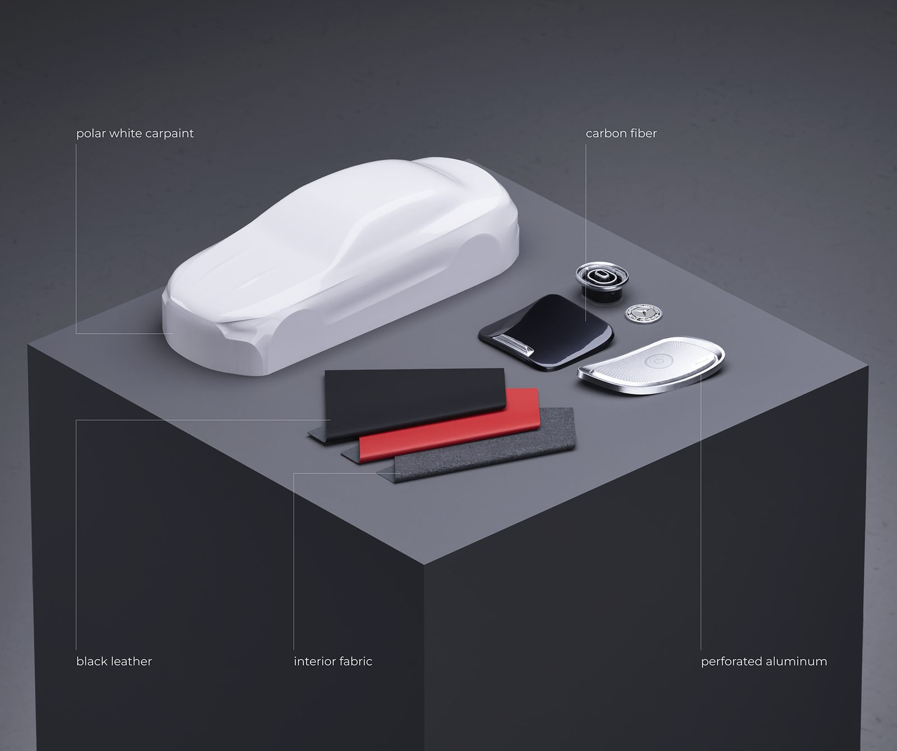
Starting from an existing base model, the UVs were re-edited and the car was rigged for sensitive posing and animation.
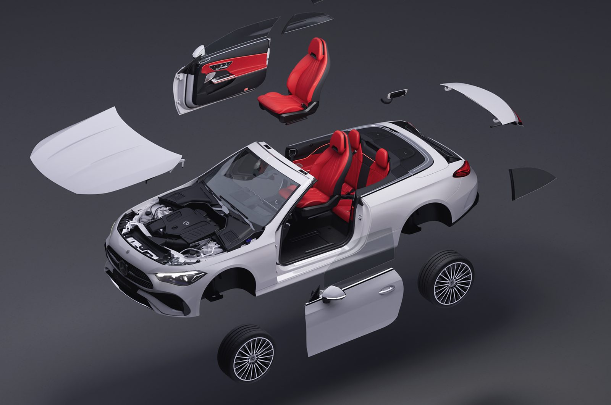
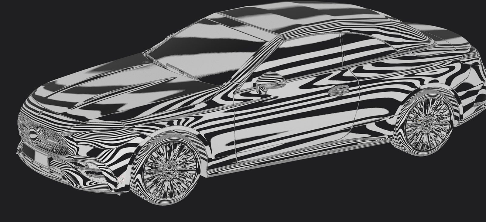
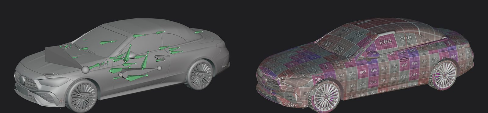
Athletic stance, fluid elegance, pure openness — five stills in the order you would walk around it.
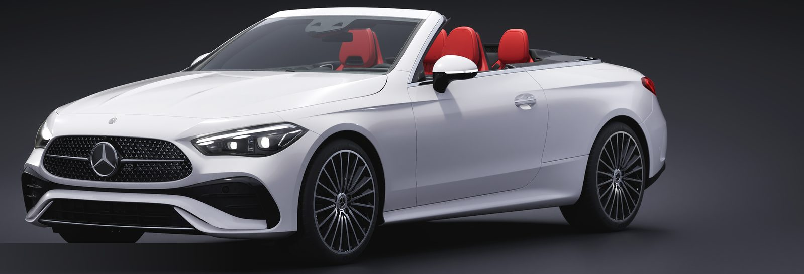
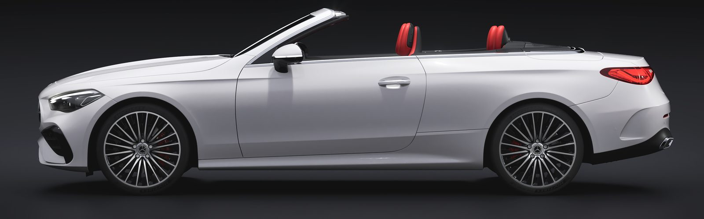
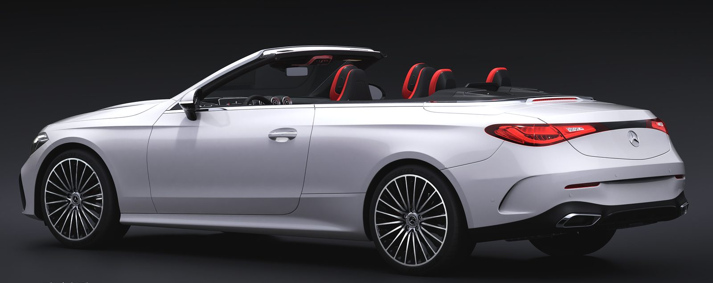
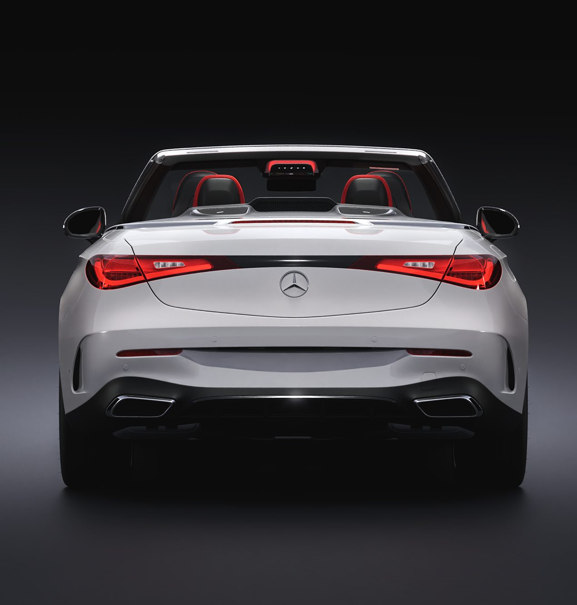
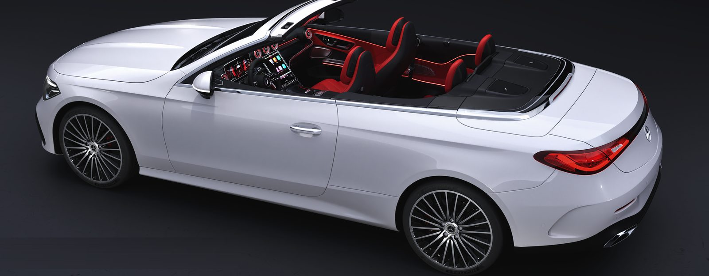
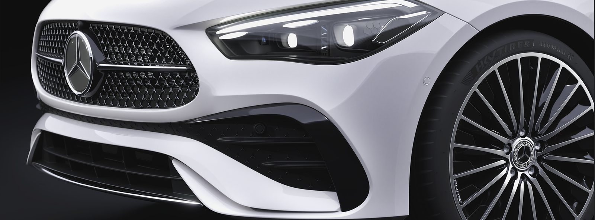
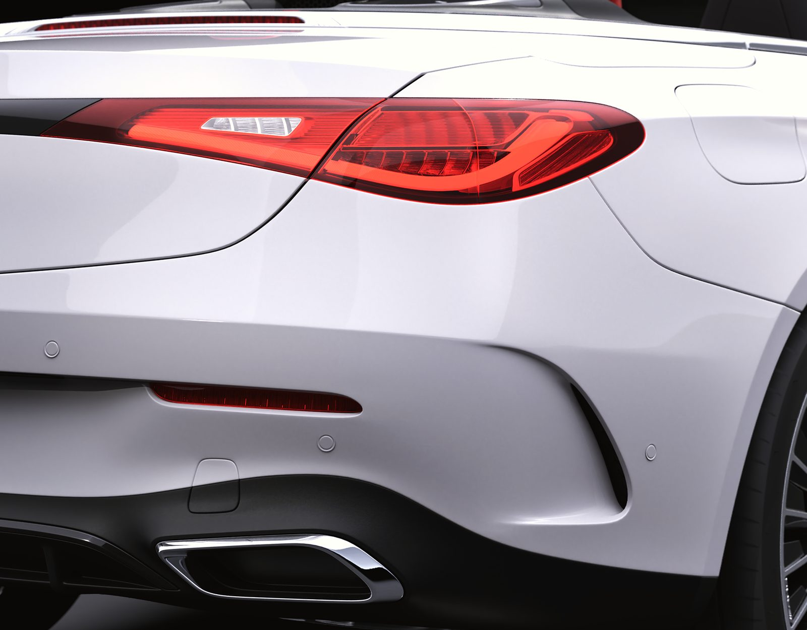
Textures of carbon, fine leather and stitching were meticulously rendered to express the interior craftsmanship. Soft ambient lighting delivers the car's gentle illumination.
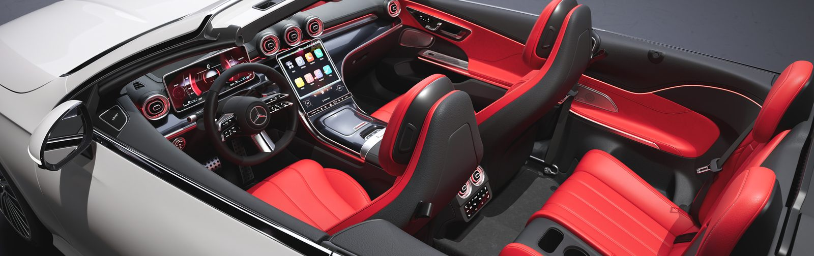
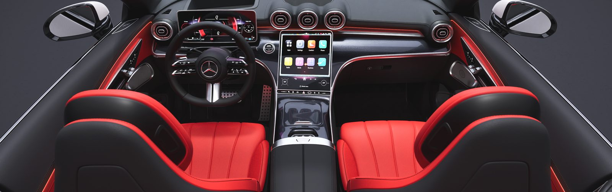
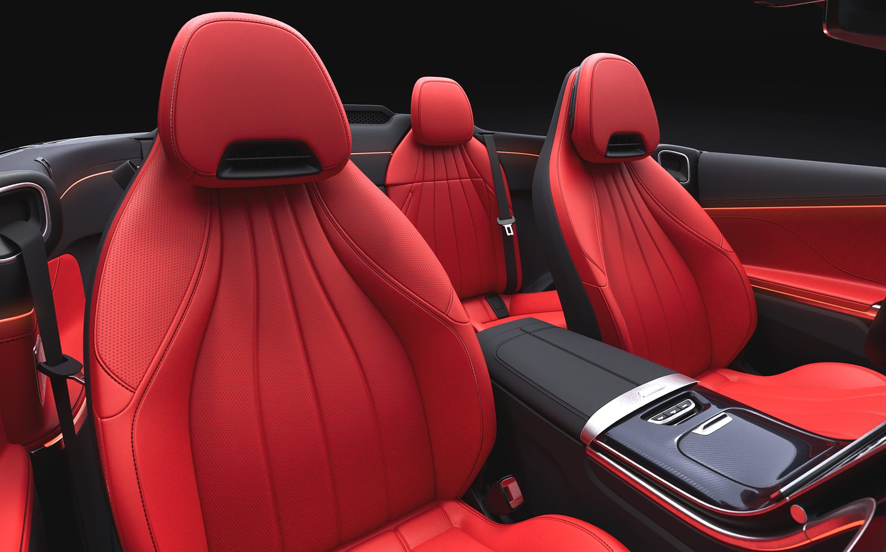
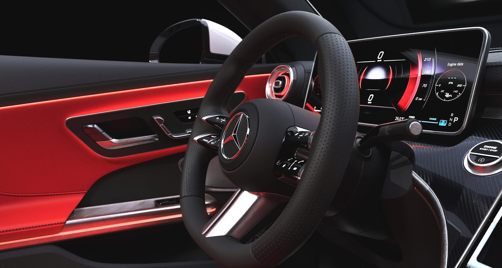
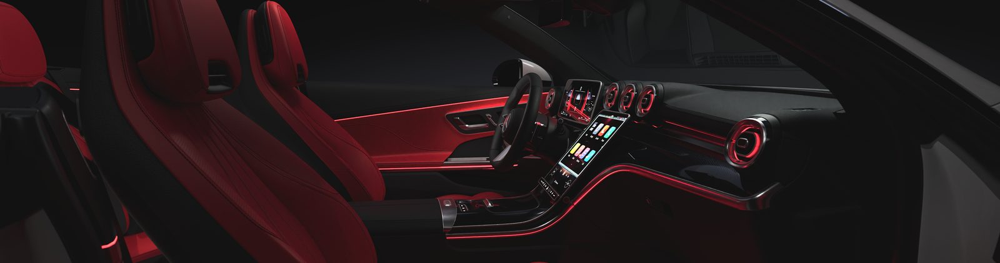
An open-top grand tourer in the setting of its audience's lifestyle — graceful silhouette, high-fidelity detail.
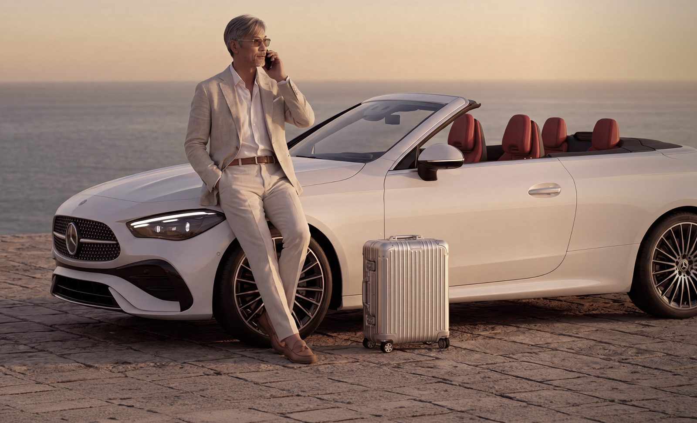
Comments
Fixed section at the end of every project
(widget not connected in this draft)